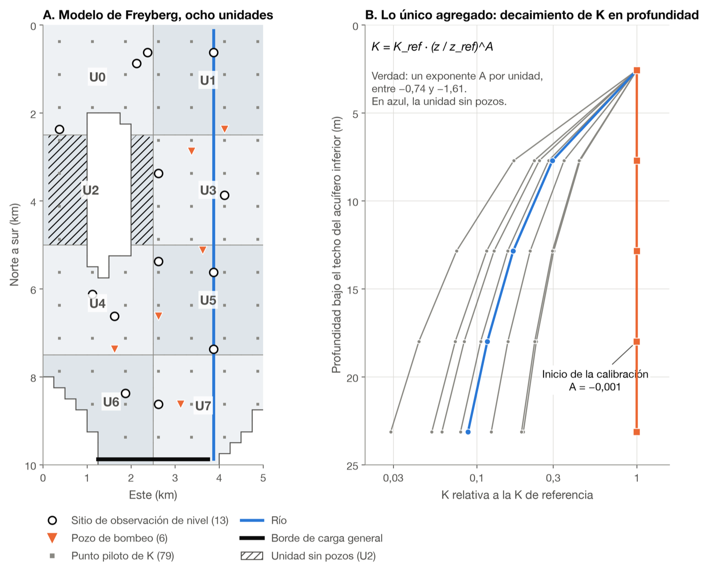
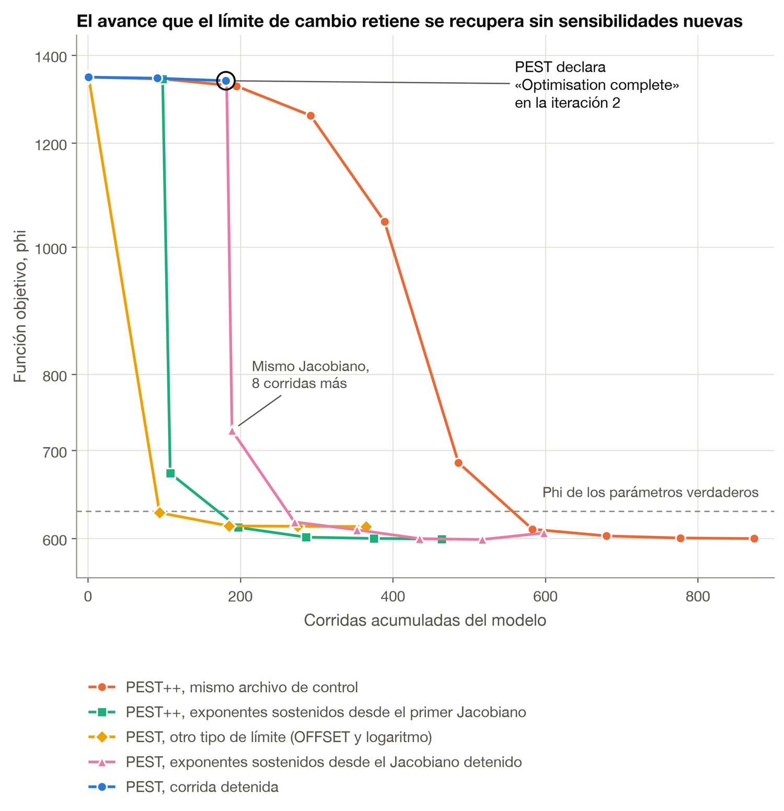

Revisar una corrida
Usar otros límites
Preparando el cálculo. La primera vez descarga unos 10 MB.
O prueba con una corrida de ejemplo
Cómo funciona
PEST y PEST++ limitan cuánto puede cambiar cada parámetro en una iteración, con RELPARMAX, FACPARMAX o ABSPARMAX. Si un parámetro pide más que su límite, el vector de actualización completo se acorta con un único factor:
Un parámetro con límite relativo que parte cerca de cero, como un exponente, una tendencia o un gradiente, tiene un límite muy pequeño y solo puede crecer por un factor fijo en cada iteración. Mientras llega a su valor, β frena también al resto. Si además los datos lo informan poco, la función objetivo apenas baja y el criterio de término puede cumplirse lejos del óptimo.
Con el Jacobiano, los residuales y el archivo de control, la página calcula el paso de Gauss-Newton por descomposición en valores singulares, le aplica los límites y compara tres mejoras de la función objetivo: la que se obtiene tal como está, la que se obtendría sosteniendo los parámetros que fijan β y la que se obtendría sin el límite. A las dos últimas les descuenta lo que se ganaría solo por ajustar ruido.
El resultado es una predicción lineal. Antes de adoptarlo conviene comprobarlo con una iteración.
El mecanismo está descrito en el manual de PEST (Doherty, 2018, parte I, secciones 3.4.5, 3.4.8 y 6.2) y aplica igual a PEST++ (White y otros, 2020). El cálculo es el mismo código Python del estudio, py/discriminador.py, ejecutado en el navegador.
El caso de prueba
El procedimiento se probó en el modelo sintético de Freyberg en MODFLOW 6, con una sola modificación: a los puntos piloto habituales se agregó un decaimiento de la conductividad con la profundidad, con un exponente por unidad iniciado en −0,001 y una de las ocho unidades sin pozos de observación. PEST 18.25 declaró la optimización completa en la segunda iteración, con más del doble de la función objetivo que se alcanza al calibrar bien.
- 37 % → 46 %Mejora anticipada al sostener los exponentes y mejora medida al hacerlo, en una iteración y con el mismo Jacobiano.
- 52 % → 53 %Mejora anticipada al cambiar el tipo de límite y mejora medida en la primera iteración.
- 286 / 680Corridas del modelo que necesitó PEST++ para llegar al mismo ajuste, con y sin el diagnóstico sobre su primer Jacobiano.
- 182 / 183Veredictos correctos en corridas terminadas por criterio propio, de 14 variantes del mismo modelo.


En una segunda variante, con una unidad de roca de 400 m bajo el acuífero y datos que sí informan los exponentes, PEST no se detuvo antes de tiempo, pero partir de −0,001 exigió el triple de corridas que partir de −1, y el diagnóstico del primer Jacobiano lo anticipó. Las catorce variantes comparten el mismo modelo base, por lo que la validación no reemplaza la comprobación en un modelo propio.